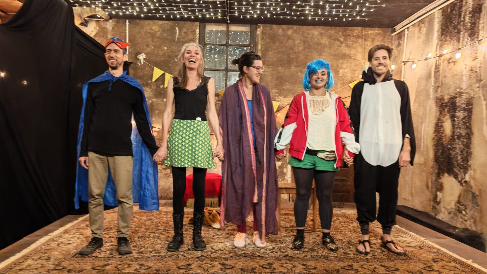

Photo
Messaline Maugars
Éva, la passeuse
Mise en scène
Rêves effondrés, corps qui lâche, désirs qu'on nous fabrique : elle relie les récits et pose la question qui les traverse tous. Quelle histoire choisit-on de se raconter maintenant ?
Spectacle Création collective, mise en scène Messaline Maugars
Grattez l'écran ✳
Le spectacle
Comment vivre dans une société qui nous demande d'être performant·es, normé·es, constant·es et adaptables ?
1h15 pour vous parler de nos traversées, de nos tentatives, de nos pas de côté : quête de sens, dépression, parentalité, burn-out, neuroatypies…
Quatre personnes arrivent sur scène, cherchent où se mettre, s'alignent face au public. Tour à tour, elles prennent la parole pour un récit de vie intime : une prise de conscience qui déborde, un corps qui fait la météo, un costume trop bien repassé, une joie qui s'apprend.
Entre chaque récit, Éva — figure solarpunk, enceinte à la main et rouge à lèvres bleu — erre, danse et pose les questions que tout le monde garde pour soi.
Une création collective mise en scène par Messaline Maugars : drôle et à vif, sur la norme, les chemins balisés, et l'histoire qu'on choisit de se raconter.
D'où nous parlons
Ce sont nos histoires, notre parole intime. Celle de cinq personnes blanches, nées en France, issues des classes moyennes, avec du capital culturel et des ressources quand ça ne va pas. Elle ne prétend pas représenter la diversité du monde, ni ses violences les plus dures. Elle dit seulement ce qu'on trouve, chez nous, si on gratte un peu.
Les voix
Éva, la passeuse
Mise en scène
Rêves effondrés, corps qui lâche, désirs qu'on nous fabrique : elle relie les récits et pose la question qui les traverse tous. Quelle histoire choisit-on de se raconter maintenant ?
Comment j'ai arrêté le millepertuis
Interprète
De l'école de commerce aux enfants des rues de Madagascar, des gourous du développement personnel aux angoisses du dimanche matin : une quête de sens drôle et lucide, qui finit par le ramener aux autres.
Le temps qu'il fait en elle
Interprète
Son cycle raconté comme un bulletin météo, jusqu'au nom enfin posé sur des années de tempêtes : le trouble dysphorique prémenstruel. Elle n'est pas la tempête, elle est celle qui la traverse.
Père au foyer, la voie royale
Interprète
Un burn-out, huit reconversions et une pile de tests de personnalité plus tard, il a trouvé sa vocation : père au foyer. Il vient vous présenter ce métier méconnu, avec ses indicateurs de performance.
Ton enfant est mal élevé
Interprète
Tout lui réussit, jusqu'à l'arrivée de Lucas : trop bruyant, trop intense, trop tout. Puis le verdict tombe, TDAH, HPI, TOP, TSA, DYS. Avec humour et sans tabou, la parentalité face au handicap invisible.
Photos à ajouter.

Ils et elles l'ont vu
70 spectateur·ices le 13 octobre, 50 le 13 novembre. Et ce qu'ils en ont dit.
« Un beau moment de sincérité et de partage ! Une pièce qui fait du bien et qui vient libérer de préjugés sur des questions de santé mentale. »
« Intime, profond, tendre et joyeux. Superbement orchestré ! […] Allez-y les yeux ouverts !!! »
« C'était de très grande qualité, drôle et touchant, universel et parlant. On rit, on s'identifie, on se pardonne. »
« Dans chaque histoire nous trouvons des fragments de nos fragilités, alors ça nous bouscule, forcément. »
« Sujet intime, honteux, difficile traité avec humour et sincérité. »
« Une manière à la fois authentique et bouleversante d'aborder ces sujets, de susciter la réflexion, de faire tomber certains préjugés et, surtout, de créer du lien (et de se marrer). »
En tournée
Réservation par SMS au 06 62 66 70 74. Merci aux Semaines d'information sur la santé mentale (SISM) pour leur accueil et leur relais.
Lieux, festivals, structures
Le dispositif est volontairement léger : une chaise, un pouf, une petite table, une enceinte. Le spectacle se joue en théâtre comme en lieu non équipé, avec la régie du lieu ou en totale autonomie.
Prolongements
Le spectacle ouvre des conversations qu'on peut poursuivre : sur la norme, la place, le récit de soi.
En bref
De santé mentale et de norme : quatre personnes racontent un pan de leur vie (quête de sens, trouble dysphorique prémenstruel, burn-out et reconversion, neuroatypie et parentalité), reliées par Éva, une passeuse qui interroge la salle.
À toute personne à partir de 15 ans : grand public, lycées, structures de santé mentale, médiathèques, festivals, entreprises et collectivités.
1 h 15, sans entracte. Il peut être suivi d'un bord de scène avec l'équipe.
Le dispositif est léger (une chaise, un pouf, une table, une enceinte) et joue en salle équipée ou non. Contact diffusion : Olivia Robert, 06 62 66 70 74, olivia@lesvoyagesdolivia.com. Dossier de diffusion et fiche technique téléchargeables sur le site.
Contact
Programmation, ateliers, presse ou simple envie de dire ce que le spectacle vous a fait.
Écrire à OliviaDiffusion : Olivia Robert · 06 62 66 70 74 · olivia@lesvoyagesdolivia.com
Technique : Messaline Maugars · 06 65 54 51 21 · messaline.maugars@gmail.com